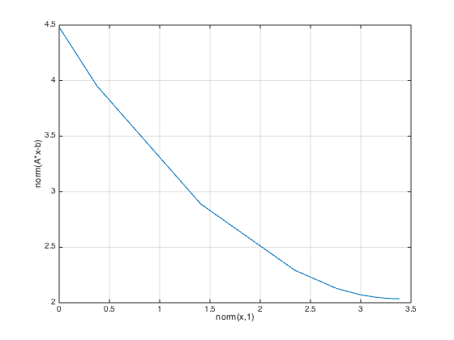

has_quadprog = exist( 'quadprog' ); has_quadprog = has_quadprog == 2 | has_quadprog == 3; has_linprog = exist( 'linprog' ); has_linprog = has_linprog == 2 | has_linprog == 3; rnstate = randn( 'state' ); randn( 'state', 1 ); s_quiet = cvx_quiet(true); s_pause = cvx_pause(false); cvx_clear; echo on %%%%%%%%%%%%%%%%%%%%%%%%%%%%%% % SECTION 2.1: LEAST SQUARES % %%%%%%%%%%%%%%%%%%%%%%%%%%%%%% % Input data m = 16; n = 8; A = randn(m,n); b = randn(m,1); % Matlab version x_ls = A \ b; % cvx version cvx_begin variable x(n) minimize( norm(A*x-b) ) cvx_end echo off % Compare disp( sprintf( '\nResults:\n--------\nnorm(A*x_ls-b): %6.4f\nnorm(A*x-b): %6.4f\ncvx_optval: %6.4f\ncvx_status: %s\n', norm(A*x_ls-b), norm(A*x-b), cvx_optval, cvx_status ) ); disp( 'Verify that x_ls == x:' ); disp( [ ' x_ls = [ ', sprintf( '%7.4f ', x_ls ), ']' ] ); disp( [ ' x = [ ', sprintf( '%7.4f ', x ), ']' ] ); disp( 'Residual vector:' ); disp( [ ' A*x-b = [ ', sprintf( '%7.4f ', A*x-b ), ']' ] ); disp( ' ' ); try input( 'Press Enter/Return for the next example...' ); clc; catch, end echo on %%%%%%%%%%%%%%%%%%%%%%%%%%%%%%%%%%%%%%%%%%%%%%%% % SECTION 2.2: BOUND-CONSTRAINED LEAST SQUARES % %%%%%%%%%%%%%%%%%%%%%%%%%%%%%%%%%%%%%%%%%%%%%%%% % More input data bnds = randn(n,2); l = min( bnds, [] ,2 ); u = max( bnds, [], 2 ); if has_quadprog, % Quadprog version x_qp = quadprog( 2*A'*A, -2*A'*b, [], [], [], [], l, u ); else % quadprog not present on this system. end % cvx version cvx_begin variable x(n) minimize( norm(A*x-b) ) subject to l <= x <= u cvx_end echo off % Compare if has_quadprog, disp( sprintf( '\nResults:\n--------\nnorm(A*x_qp-b): %6.4f\nnorm(A*x-b): %6.4f\ncvx_optval: %6.4f\ncvx_status: %s\n', norm(A*x_qp-b), norm(A*x-b), cvx_optval, cvx_status ) ); disp( 'Verify that l <= x_qp == x <= u:' ); disp( [ ' l = [ ', sprintf( '%7.4f ', l ), ']' ] ); disp( [ ' x_qp = [ ', sprintf( '%7.4f ', x_qp ), ']' ] ); disp( [ ' x = [ ', sprintf( '%7.4f ', x ), ']' ] ); disp( [ ' u = [ ', sprintf( '%7.4f ', u ), ']' ] ); else disp( sprintf( '\nResults:\n--------\nnorm(A*x-b): %6.4f\ncvx_optval: %6.4f\ncvx_status: %s\n', norm(A*x-b), cvx_optval, cvx_status ) ); disp( 'Verify that l <= x <= u:' ); disp( [ ' l = [ ', sprintf( '%7.4f ', l ), ']' ] ); disp( [ ' x = [ ', sprintf( '%7.4f ', x ), ']' ] ); disp( [ ' u = [ ', sprintf( '%7.4f ', u ), ']' ] ); end disp( 'Residual vector:' ); disp( [ ' A*x-b = [ ', sprintf( '%7.4f ', A*x-b ), ']' ] ); disp( ' ' ); try input( 'Press Enter/Return for the next example...' ); clc; catch, end echo on %%%%%%%%%%%%%%%%%%%%%%%%%%%%%%%%%%%%%%%%%%%%%%%%%%%%%%%%% % SECTION 2.3: OTHER NORMS AND FUNCTIONS: INFINITY NORM % %%%%%%%%%%%%%%%%%%%%%%%%%%%%%%%%%%%%%%%%%%%%%%%%%%%%%%%%% if has_linprog, % linprog version f = [ zeros(n,1); 1 ]; Ane = [ +A, -ones(m,1) ; ... -A, -ones(m,1) ]; bne = [ +b; -b ]; xt = linprog(f,Ane,bne); x_lp = xt(1:n,:); else % linprog not present on this system. end % cvx version cvx_begin variable x(n) minimize( norm(A*x-b,Inf) ) cvx_end echo off % Compare if has_linprog, disp( sprintf( '\nResults:\n--------\nnorm(A*x_lp-b,Inf): %6.4f\nnorm(A*x-b,Inf): %6.4f\ncvx_optval: %6.4f\ncvx_status: %s\n', norm(A*x_lp-b,Inf), norm(A*x-b,Inf), cvx_optval, cvx_status ) ); disp( 'Verify that x_lp == x:' ); disp( [ ' x_lp = [ ', sprintf( '%7.4f ', x_lp ), ']' ] ); disp( [ ' x = [ ', sprintf( '%7.4f ', x ), ']' ] ); else disp( sprintf( '\nResults:\n--------\nnorm(A*x-b,Inf): %6.4f\ncvx_optval: %6.4f\ncvx_status: %s\n', norm(A*x-b,Inf), cvx_optval, cvx_status ) ); disp( 'Optimal vector:' ); disp( [ ' x = [ ', sprintf( '%7.4f ', x ), ']' ] ); end disp( sprintf( 'Residual vector; verify that the peaks match the objective (%6.4f):', cvx_optval ) ); disp( [ ' A*x-b = [ ', sprintf( '%7.4f ', A*x-b ), ']' ] ); disp( ' ' ); try input( 'Press Enter/Return for the next example...' ); clc; catch, end echo on %%%%%%%%%%%%%%%%%%%%%%%%%%%%%%%%%%%%%%%%%%%%%%%%%%%% % SECTION 2.3: OTHER NORMS AND FUNCTIONS: ONE NORM % %%%%%%%%%%%%%%%%%%%%%%%%%%%%%%%%%%%%%%%%%%%%%%%%%%%% if has_linprog, % Matlab version f = [ zeros(n,1); ones(m,1); ones(m,1) ]; Aeq = [ A, -eye(m), +eye(m) ]; lb = [ -Inf*ones(n,1); zeros(m,1); zeros(m,1) ]; xzz = linprog(f,[],[], Aeq,b,lb,[]); x_lp = xzz(1:n,:) - xzz(n+1:2*n,:); else % linprog not present on this system end % cvx version cvx_begin variable x(n) minimize( norm(A*x-b,1) ) cvx_end echo off % Compare if has_linprog, disp( sprintf( '\nResults:\n--------\nnorm(A*x_lp-b,1): %6.4f\nnorm(A*x-b,1): %6.4f\ncvx_optval: %6.4f\ncvx_status: %s\n', norm(A*x_lp-b,1), norm(A*x-b,1), cvx_optval, cvx_status ) ); disp( 'Verify that x_lp == x:' ); disp( [ ' x_lp = [ ', sprintf( '%7.4f ', x_lp ), ']' ] ); disp( [ ' x = [ ', sprintf( '%7.4f ', x ), ']' ] ); else disp( sprintf( '\nResults:\n--------\nnorm(A*x-b,1): %6.4f\ncvx_optval: %6.4f\ncvx_status: %s\n', norm(A*x-b,1), cvx_optval, cvx_status ) ); disp( 'Optimal vector:' ); disp( [ ' x = [ ', sprintf( '%7.4f ', x ), ']' ] ); end disp( 'Residual vector; verify the presence of several zero residuals:' ); disp( [ ' A*x-b = [ ', sprintf( '%7.4f ', A*x-b ), ']' ] ); disp( ' ' ); try input( 'Press Enter/Return for the next example...' ); clc; catch, end echo on %%%%%%%%%%%%%%%%%%%%%%%%%%%%%%%%%%%%%%%%%%%%%%%%%%%%%%%%%% % SECTION 2.3: OTHER NORMS AND FUNCTIONS: LARGEST-K NORM % %%%%%%%%%%%%%%%%%%%%%%%%%%%%%%%%%%%%%%%%%%%%%%%%%%%%%%%%%% % cvx specification k = 5; cvx_begin variable x(n) minimize( norm_largest(A*x-b,k) ) cvx_end echo off % Compare temp = sort(abs(A*x-b)); disp( sprintf( '\nResults:\n--------\nnorm_largest(A*x-b,k): %6.4f\ncvx_optval: %6.4f\ncvx_status: %s\n', norm_largest(A*x-b,k), cvx_optval, cvx_status ) ); disp( 'Optimal vector:' ); disp( [ ' x = [ ', sprintf( '%7.4f ', x ), ']' ] ); disp( sprintf( 'Residual vector; verify a tie for %d-th place (%7.4f):', k, temp(end-k+1) ) ); disp( [ ' A*x-b = [ ', sprintf( '%7.4f ', A*x-b ), ']' ] ); disp( ' ' ); try input( 'Press Enter/Return for the next example...' ); clc; catch, end echo on %%%%%%%%%%%%%%%%%%%%%%%%%%%%%%%%%%%%%%%%%%%%%%%%%%%%%%%%% % SECTION 2.3: OTHER NORMS AND FUNCTIONS: HUBER PENALTY % %%%%%%%%%%%%%%%%%%%%%%%%%%%%%%%%%%%%%%%%%%%%%%%%%%%%%%%%% % cvx specification cvx_begin variable x(n) minimize( sum(huber(A*x-b)) ) cvx_end echo off % Compare disp( sprintf( '\nResults:\n--------\nsum(huber(A*x-b)): %6.4f\ncvx_optval: %6.4f\ncvx_status: %s\n', sum(huber(A*x-b)), cvx_optval, cvx_status ) ); disp( 'Optimal vector:' ); disp( [ ' x = [ ', sprintf( '%7.4f ', x ), ']' ] ); disp( 'Residual vector:' ); disp( [ ' A*x-b = [ ', sprintf( '%7.4f ', A*x-b ), ']' ] ); disp( ' ' ); try input( 'Press Enter/Return for the next example...' ); clc; catch, end echo on %%%%%%%%%%%%%%%%%%%%%%%%%%%%%%%%%% % SECTION 2.4: OTHER CONSTRAINTS % %%%%%%%%%%%%%%%%%%%%%%%%%%%%%%%%%% % More input data p = 4; C = randn(p,n); d = randn(p,1); % cvx specification cvx_begin variable x(n); minimize( norm(A*x-b) ) subject to C*x == d norm(x,Inf) <= 1 cvx_end echo off % Compare disp( sprintf( '\nResults:\n--------\nnorm(A*x-b): %6.4f\ncvx_optval: %6.4f\ncvx_status: %s\n', norm(A*x-b), cvx_optval, cvx_status ) ); disp( 'Optimal vector:' ); disp( [ ' x = [ ', sprintf( '%7.4f ', x ), ']' ] ); disp( 'Residual vector:' ); disp( [ ' A*x-b = [ ', sprintf( '%7.4f ', A*x-b ), ']' ] ); disp( 'Equality constraints:' ); disp( [ ' C*x = [ ', sprintf( '%7.4f ', C*x ), ']' ] ); disp( [ ' d = [ ', sprintf( '%7.4f ', d ), ']' ] ); try input( 'Press Enter/Return for the next example...' ); clc; catch, end echo on %%%%%%%%%%%%%%%%%%%%%%%%%%%%%%%%%%%%%%%%%% % SECTION 2.5: AN OPTIMAL TRADEOFF CURVE % %%%%%%%%%%%%%%%%%%%%%%%%%%%%%%%%%%%%%%%%%% % The basic problem: % cvx_begin % variable x(n) % minimize( norm(A*x-b)+gamma(k)*norm(x,1) ) % cvx_end echo off disp( ' ' ); disp( 'Generating tradeoff curve...' ); cvx_pause(false); gamma = logspace( -2, 2, 20 ); l2norm = zeros(size(gamma)); l1norm = zeros(size(gamma)); fprintf( 1, ' gamma norm(x,1) norm(A*x-b)\n' ); fprintf( 1, '---------------------------------------\n' ); for k = 1:length(gamma), fprintf( 1, '%8.4e', gamma(k) ); cvx_begin variable x(n) minimize( norm(A*x-b)+gamma(k)*norm(x,1) ) cvx_end l1norm(k) = norm(x,1); l2norm(k) = norm(A*x-b); fprintf( 1, ' %8.4e %8.4e\n', l1norm(k), l2norm(k) ); end plot( l1norm, l2norm ); xlabel( 'norm(x,1)' ); ylabel( 'norm(A*x-b)' ); grid disp( 'Done. (Check out the graph!)' ); randn( 'state', rnstate ); cvx_quiet(s_quiet); cvx_pause(s_pause);
%%%%%%%%%%%%%%%%%%%%%%%%%%%%%%
% SECTION 2.1: LEAST SQUARES %
%%%%%%%%%%%%%%%%%%%%%%%%%%%%%%
% Input data
m = 16; n = 8;
A = randn(m,n);
b = randn(m,1);
% Matlab version
x_ls = A \ b;
% cvx version
cvx_begin
variable x(n)
minimize( norm(A*x-b) )
cvx_end
echo off
Results:
--------
norm(A*x_ls-b): 2.0354
norm(A*x-b): 2.0354
cvx_optval: 2.0354
cvx_status: Solved
Verify that x_ls == x:
x_ls = [ -0.2628 0.8828 -0.0734 -1.0844 0.3249 -0.3330 0.0603 0.3802 ]
x = [ -0.2628 0.8828 -0.0734 -1.0844 0.3249 -0.3330 0.0603 0.3802 ]
Residual vector:
A*x-b = [ -0.3262 -0.0070 -0.9543 0.2447 -0.6418 -0.3426 -0.1870 0.2960 0.6024 -0.0440 0.6238 -0.7399 0.0849 0.9323 0.4799 -0.0762 ]
%%%%%%%%%%%%%%%%%%%%%%%%%%%%%%%%%%%%%%%%%%%%%%%%
% SECTION 2.2: BOUND-CONSTRAINED LEAST SQUARES %
%%%%%%%%%%%%%%%%%%%%%%%%%%%%%%%%%%%%%%%%%%%%%%%%
% More input data
bnds = randn(n,2);
l = min( bnds, [] ,2 );
u = max( bnds, [], 2 );
if has_quadprog,
else
% quadprog not present on this system.
end
% cvx version
cvx_begin
variable x(n)
minimize( norm(A*x-b) )
subject to
l <= x <= u
cvx_end
echo off
Results:
--------
norm(A*x-b): 4.1334
cvx_optval: 4.1334
cvx_status: Solved
Verify that l <= x <= u:
l = [ -0.5618 0.2760 -0.2277 -0.0290 -0.9287 0.4520 0.1014 -0.3658 ]
x = [ -0.0910 0.2918 0.2746 -0.0290 0.0828 0.4520 0.1014 0.6919 ]
u = [ -0.0910 0.7395 0.9403 0.1842 0.0828 0.7450 2.4881 0.6919 ]
Residual vector:
A*x-b = [ -0.1209 0.2155 -1.0903 -0.1312 -2.0952 1.6798 0.3784 -0.5592 1.0411 0.6937 1.6036 -0.0045 0.9935 0.2156 1.2186 -1.2228 ]
%%%%%%%%%%%%%%%%%%%%%%%%%%%%%%%%%%%%%%%%%%%%%%%%%%%%%%%%%
% SECTION 2.3: OTHER NORMS AND FUNCTIONS: INFINITY NORM %
%%%%%%%%%%%%%%%%%%%%%%%%%%%%%%%%%%%%%%%%%%%%%%%%%%%%%%%%%
if has_linprog,
else
% linprog not present on this system.
end
% cvx version
cvx_begin
variable x(n)
minimize( norm(A*x-b,Inf) )
cvx_end
echo off
Results:
--------
norm(A*x-b,Inf): 0.7079
cvx_optval: 0.7079
cvx_status: Solved
Optimal vector:
x = [ -0.0944 0.8498 -0.1119 -1.1311 0.3804 -0.3017 0.2201 0.2488 ]
Residual vector; verify that the peaks match the objective (0.7079):
A*x-b = [ -0.0431 -0.0539 -0.7079 0.7079 -0.7079 -0.7079 -0.1800 0.5049 0.7079 -0.0040 0.7079 -0.7079 -0.1010 0.7079 0.7079 -0.2187 ]
%%%%%%%%%%%%%%%%%%%%%%%%%%%%%%%%%%%%%%%%%%%%%%%%%%%%
% SECTION 2.3: OTHER NORMS AND FUNCTIONS: ONE NORM %
%%%%%%%%%%%%%%%%%%%%%%%%%%%%%%%%%%%%%%%%%%%%%%%%%%%%
if has_linprog,
else
% linprog not present on this system
end
% cvx version
cvx_begin
variable x(n)
minimize( norm(A*x-b,1) )
cvx_end
echo off
Results:
--------
norm(A*x-b,1): 5.3359
cvx_optval: 5.3359
cvx_status: Solved
Optimal vector:
x = [ -0.3550 0.8934 -0.0375 -1.1827 0.1694 -0.3870 -0.2148 0.6712 ]
Residual vector; verify the presence of several zero residuals:
A*x-b = [ -0.7666 0.0129 -1.4977 0.0000 -0.5074 -0.0000 -0.0000 0.0357 0.0000 0.0000 0.0299 -1.0842 -0.0000 1.4013 0.0000 -0.0000 ]
%%%%%%%%%%%%%%%%%%%%%%%%%%%%%%%%%%%%%%%%%%%%%%%%%%%%%%%%%%
% SECTION 2.3: OTHER NORMS AND FUNCTIONS: LARGEST-K NORM %
%%%%%%%%%%%%%%%%%%%%%%%%%%%%%%%%%%%%%%%%%%%%%%%%%%%%%%%%%%
% cvx specification
k = 5;
cvx_begin
variable x(n)
minimize( norm_largest(A*x-b,k) )
cvx_end
echo off
Results:
--------
norm_largest(A*x-b,k): 3.5394
cvx_optval: 3.5394
cvx_status: Solved
Optimal vector:
x = [ -0.0944 0.8498 -0.1119 -1.1311 0.3804 -0.3017 0.2201 0.2488 ]
Residual vector; verify a tie for 5-th place ( 0.7079):
A*x-b = [ -0.0431 -0.0539 -0.7079 0.7079 -0.7079 -0.7079 -0.1800 0.5049 0.7079 -0.0040 0.7079 -0.7079 -0.1010 0.7079 0.7079 -0.2187 ]
%%%%%%%%%%%%%%%%%%%%%%%%%%%%%%%%%%%%%%%%%%%%%%%%%%%%%%%%%
% SECTION 2.3: OTHER NORMS AND FUNCTIONS: HUBER PENALTY %
%%%%%%%%%%%%%%%%%%%%%%%%%%%%%%%%%%%%%%%%%%%%%%%%%%%%%%%%%
% cvx specification
cvx_begin
variable x(n)
minimize( sum(huber(A*x-b)) )
cvx_end
echo off
Results:
--------
sum(huber(A*x-b)): 4.1428
cvx_optval: 4.1428
cvx_status: Solved
Optimal vector:
x = [ -0.2628 0.8828 -0.0734 -1.0844 0.3249 -0.3330 0.0603 0.3802 ]
Residual vector:
A*x-b = [ -0.3262 -0.0070 -0.9543 0.2447 -0.6418 -0.3426 -0.1870 0.2960 0.6024 -0.0440 0.6238 -0.7399 0.0849 0.9323 0.4799 -0.0762 ]
%%%%%%%%%%%%%%%%%%%%%%%%%%%%%%%%%%
% SECTION 2.4: OTHER CONSTRAINTS %
%%%%%%%%%%%%%%%%%%%%%%%%%%%%%%%%%%
% More input data
p = 4;
C = randn(p,n);
d = randn(p,1);
% cvx specification
cvx_begin
variable x(n);
minimize( norm(A*x-b) )
subject to
C*x == d
norm(x,Inf) <= 1
cvx_end
echo off
Results:
--------
norm(A*x-b): 5.9545
cvx_optval: 5.9545
cvx_status: Solved
Optimal vector:
x = [ 0.1173 1.0000 0.0979 -0.1256 0.5255 0.7102 -0.0127 0.8397 ]
Residual vector:
A*x-b = [ -0.7438 0.0763 -2.0376 -1.3110 -2.3956 0.2175 -1.2595 -0.7583 1.6970 1.9857 0.8180 1.0527 2.5150 -1.2068 2.1631 -0.1360 ]
Equality constraints:
C*x = [ 1.0035 -2.6761 0.0168 -1.4432 ]
d = [ 1.0035 -2.6761 0.0168 -1.4432 ]
%%%%%%%%%%%%%%%%%%%%%%%%%%%%%%%%%%%%%%%%%%
% SECTION 2.5: AN OPTIMAL TRADEOFF CURVE %
%%%%%%%%%%%%%%%%%%%%%%%%%%%%%%%%%%%%%%%%%%
% The basic problem:
% cvx_begin
% variable x(n)
% minimize( norm(A*x-b)+gamma(k)*norm(x,1) )
% cvx_end
echo off
Generating tradeoff curve...
gamma norm(x,1) norm(A*x-b)
---------------------------------------
1.0000e-02 3.3796e+00 2.0355e+00
1.6238e-02 3.3658e+00 2.0357e+00
2.6367e-02 3.3433e+00 2.0362e+00
4.2813e-02 3.3068e+00 2.0374e+00
6.9519e-02 3.2473e+00 2.0408e+00
1.1288e-01 3.1498e+00 2.0497e+00
1.8330e-01 2.9878e+00 2.0737e+00
2.9764e-01 2.7617e+00 2.1280e+00
4.8329e-01 2.3445e+00 2.2924e+00
7.8476e-01 1.4081e+00 2.8895e+00
1.2743e+00 3.7687e-01 3.9510e+00
2.0691e+00 1.0114e-08 4.4813e+00
3.3598e+00 5.3229e-09 4.4813e+00
5.4556e+00 1.9095e-09 4.4813e+00
8.8587e+00 5.4562e-10 4.4813e+00
1.4384e+01 2.6802e-10 4.4813e+00
2.3357e+01 3.7102e-10 4.4813e+00
3.7927e+01 1.0869e-10 4.4813e+00
6.1585e+01 2.5093e-11 4.4813e+00
1.0000e+02 2.8799e-11 4.4813e+00
Done. (Check out the graph!)
